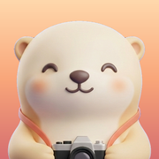

오프더데이
하루 한 장, 한 달이 한 장
오늘 칸을 누르고, 사진을 한 장 고르고, 저장을 누르면 하루가 채워집니다. 가입도 서버도 없이 전부 이 폰 안에서.
자주 묻는 질문
폰을 바꾸면 일기가 옮겨지나요?
iCloud 백업으로 새 폰을 설정하면 함께 옮겨집니다. 오프더데이는 서버가 없어서 따로 동기화하지 않습니다. 설정의 「내보내기」로 사진과 글을 zip 파일 하나로 받아 둘 수도 있습니다.
사진첩에서 원본 사진을 지우면 달력에서도 사라지나요?
사라지지 않습니다. 사진을 넣는 순간 앱 안으로 사본을 만들어 둡니다.
일기를 실수로 지웠어요.
설정의 「지운 일기」에서 30일 안에 되살릴 수 있습니다. 30일이 지나면 사진까지 함께 지워집니다.
잠금을 켰는데 Face ID 가 안 돼요.
얼굴이 맞지 않으면 기기 암호로 열 수 있습니다. 앱에 갇히는 일은 없습니다.
공유 카드에 위치가 들어가나요?
들어가지 않습니다. 카드는 앱이 새로 그린 그림이라 사진의 위치 정보가 없습니다.
문의
gc.yang@teamsparta.co 로 보내주세요.
개인정보
수집하는 정보가 없습니다. 자세한 내용은 개인정보 처리방침.